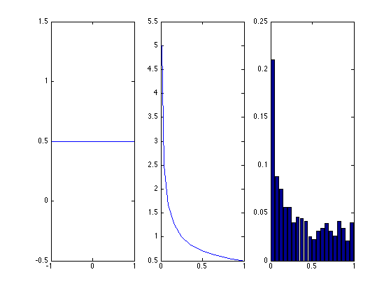

Change of Variables Demo 1D
x ~ U(-1,1), y=x^2, plot pdf of y
% This file is from pmtk3.googlecode.com xs = -1:0.1:1; a = -1; b = 1; %dist = UnifDist(a,b); %px = exp(logprob(dist, xs)); px = 1/(b-a) * ones(1,length(xs)); fn = @(x) x.^2; ys = fn(xs); % analtyic ppy = 1./(2*sqrt(ys)); % Monte Carlo n=1000; %samples = sample(dist, 1000); samples = rand(1, 1000)*(b-a) + a; % sample from U(a,b) samples2 = fn(samples); %[f, xi] = ksdensity(samples2); [h,bins] = hist(samples2,20); h = normalize(h); figure(2);clf nr = 1; nc = 3; subplot(nr,nc,1); plot(xs, px, '-'); subplot(nr,nc,2); plot(ys, ppy, '-'); subplot(nr,nc,3); bar(bins,h); printPmtkFigure('changeOfVars');